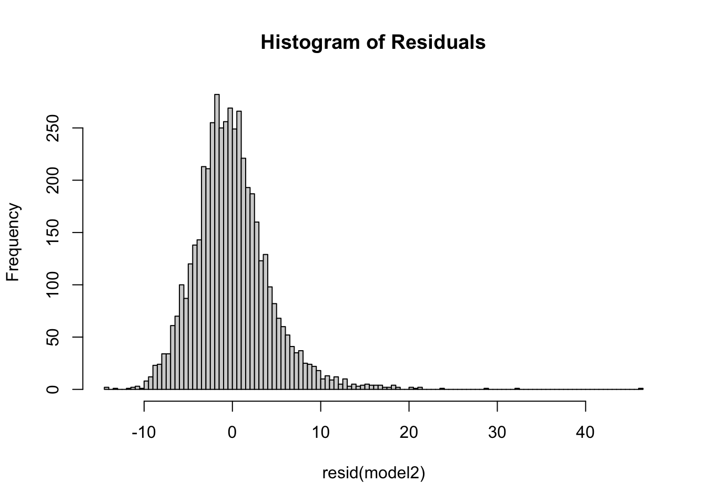

Rregression Based on Data
cleaned_data = read_csv("cleaned_data.csv")Two sample t-test
##
## Welch Two Sample t-test
##
## data: elementary_data and middle_high_data
## t = 5.3868, df = 2231.4, p-value = 7.925e-08
## alternative hypothesis: true difference in means is not equal to 0
## 95 percent confidence interval:
## 5.584832 11.978698
## sample estimates:
## mean of x mean of y
## 42.93861 34.15685The two-sample t-test conducted compares the average number of overweight female students across two different educational levels: elementary and middle/high school. This statistical test was designed to determine whether there is a significant difference in the prevalence of overweight conditions among female students in these distinct grade levels. The test results indicated a statistically significant difference in the average number of overweight female students between the two grade levels, leading to the rejection of the null hypothesis. This suggests that the grade level is an influential factor in the prevalence of overweight conditions among female students. ### SLR - Sex vs Percentage of Overweight
train_data =
cleaned_data |>
select(year, sex, grade_level,
number_overweight, percent_overweight,
number_obese, percent_obese,
number_overweight_or_obese, percent_overweight_or_obese,
number_healthy_weight, percent_healthy_weight) |>
mutate(sex = ifelse(sex=="FEMALE", 0, 1),
grade_level = ifelse(grade_level=="ELEMENTARY", 0, 1)) |>
drop_na()Check if outcome is normally distributed.
school_level_dist = train_data |>
ggplot(aes(x = percent_overweight)) +
geom_histogram(alpha = 0.8, color = "white") +
labs(
x = "Percent Overweight" ,
y = "Count",
title = "Distribution of Percent Overweight at Finer School Level")
ggplotly(school_level_dist)The outcome is roughly normal, so no transformation needed.
Check for normality of residuals.
model1 = lm(percent_overweight ~ sex, data = train_data)
hist(resid(model1), breaks = "FD", main = "Histogram of Residuals")Check for homocedasticity.
plot(fitted(model1), resid(model1))
abline(h = 0, col = "red")The variance of the residuals is roughly constant across all levels of the predictor and the residuals are also normally distributed. So assumptions for linear regression are checked. We can proceed to conduct the prediction.
Fit the model.
sex_slr = lm(percent_overweight ~ sex, data = train_data)
sex_slr_df = sex_slr |> broom::tidy()
knitr::kable(sex_slr_df)| term | estimate | std.error | statistic | p.value |
|---|---|---|---|---|
| (Intercept) | 17.546446 | 0.0892055 | 196.696951 | 0 |
| sex | -1.177219 | 0.1259459 | -9.347023 | 0 |
The SLR model we fit is percent_overweight at school-level = 17.546446 - 1.177219 * sex.
The coefficient estimate of -1.177219 with a p-value of almost 0 indicates that the effect of sex on the percentage of overweight students is statistically significant.
Since female is encoded as the reference group 0, we can say that male students group in NY schools had lower percentage of overweight students compared to female students group. This corresponds to the line plot visualization displayed in the previous section, where the line for male students is always below that for female students.
SLR - Grade Level vs Percentage of Overweight
Check for normality of residuals.
model2 = lm(percent_overweight ~ grade_level, data = train_data)
hist(resid(model2), breaks = "FD", main = "Histogram of Residuals")
Check homosdasticity.
plot(fitted(model2), resid(model2))
abline(h = 0, col = "red") The variance of the residuals is roughly constant across all levels of
the predictor and the residuals are also normally distributed. So
assumptions for linear regression are checked. We can proceed to conduct
the prediction.
The variance of the residuals is roughly constant across all levels of
the predictor and the residuals are also normally distributed. So
assumptions for linear regression are checked. We can proceed to conduct
the prediction.
Fit the model.
grade_level_slr = lm(percent_overweight ~ grade_level, data = train_data)
grade_level_slr_df = grade_level_slr |> broom::tidy()
knitr::kable(grade_level_slr_df)| term | estimate | std.error | statistic | p.value |
|---|---|---|---|---|
| (Intercept) | 16.126602 | 0.0866902 | 186.02569 | 0 |
| grade_level | 1.716477 | 0.1247212 | 13.76251 | 0 |
The SLR model we fit is percent_overweight at school-level = 16.126602 - 1.716477 * grade_level.
The coefficient estimate of 1.716477 with a p-value of almost 0 indicates that the effect of grade_level on the percentage of overweight students is statistically significant.
Since elementary school is encoded as the reference group 0, we can say that middle/high school students in NY had higher percentage of overweight students compared to elementary school students. This also corresponds to the line plot visualization displayed in the previous section, where the line for elementary students is always below that for middle/high school students.
MLR - Grade Level, Sex vs Percentage of Overweight
mlr = lm(percent_overweight ~ grade_level + sex, data = train_data)
mlr_df = mlr |> broom::tidy()
knitr::kable(mlr_df)| term | estimate | std.error | statistic | p.value |
|---|---|---|---|---|
| (Intercept) | 16.717571 | 0.1058518 | 157.933676 | 0 |
| grade_level | 1.718086 | 0.1235648 | 13.904326 | 0 |
| sex | -1.179560 | 0.1234951 | -9.551469 | 0 |
The MLR model we fit is percent_overweight at school-level = 16.717571 - -1.179560 * grade_level + 1.718086 * grade_level.
The coefficient estimates with p-values of almost 0 indicates that the effect of both sex and grade_level on the percentage of overweight students are statistically significant.
Next, we use anova to check if SLR (with only sex or grade level) is more preferrable than MLR.
anova(sex_slr, grade_level_slr, mlr)## Analysis of Variance Table
##
## Model 1: percent_overweight ~ sex
## Model 2: percent_overweight ~ grade_level
## Model 3: percent_overweight ~ grade_level + sex
## Res.Df RSS Df Sum of Sq F Pr(>F)
## 1 4798 91328
## 2 4798 89460 0 1868.5
## 3 4797 87790 1 1669.6 91.231 < 2.2e-16 ***
## ---
## Signif. codes: 0 '***' 0.001 '**' 0.01 '*' 0.05 '.' 0.1 ' ' 1So, MLR is more preferrable than SLR here because the p-value is < 2.2e-16, which is significant at 5% alpha level.
MLR - Demo Info vs Percentage/Number of Overweight
selected =
cleaned_data |>
select(year, district, percent_overweight, num_asian, num_black, num_hisp, num_am_ind, num_white)
district_level_data =
selected |>
group_by(year, district) |>
summarise(med_overweight = median(percent_overweight)) |>
drop_na()group_demo =
selected |>
group_by(year, district) |>
summarise(total_asian = sum(num_asian),
total_black = sum(num_black),
total_hisp = sum(num_hisp),
total_am_ind = sum(num_am_ind),
total_white = sum(num_white)) |>
drop_na()result_df =
district_level_data |>
left_join(group_demo, by = c("year", "district")) |>
ungroup() |>
select(-district)overweight_dist = result_df |>
ggplot(aes(x = med_overweight)) +
geom_histogram(alpha = 0.8, color = "white") +
labs(
x = "Median Percent of Overweight" ,
y = "Count",
title = "Distribution of Median Percent of Overweight")
ggplotly(overweight_dist)The outcome distribution is roughly normal, so no transformation is needed.
Then, we will look at a correlation matrix to determine which variables to select as predictors.
cor_matrix = cor(result_df[, c(colnames(result_df))])We need to deal with the highly correlated predictor pairs before fitting the model.
# Find the pairs where correlation is greater than or equal to 0.7 but less than 1
high_cor_pairs = which(cor_matrix >= 0.7 & cor_matrix < 1, arr.ind = TRUE)
# Extract the variable names for these pairs
high_cor_var_pairs = data.frame(
Var1 = rownames(cor_matrix)[high_cor_pairs[, 1]],
Var2 = colnames(cor_matrix)[high_cor_pairs[, 2]],
Correlation = cor_matrix[high_cor_pairs]
)
high_cor_var_pairs## [1] Var1 Var2 Correlation
## <0 rows> (or 0-length row.names)There is no highly correlated pairs in all predictors. So, multicollinearity is cleared, now we can fit an MLR model.
mlr = lm(med_overweight ~ ., data = result_df)
display = mlr |> broom::tidy() |> knitr::kable()
display| term | estimate | std.error | statistic | p.value |
|---|---|---|---|---|
| (Intercept) | 204.2116961 | 119.4682431 | 1.709339 | 0.0876312 |
| year | -0.0926723 | 0.0592411 | -1.564326 | 0.1179889 |
| total_asian | -0.0003668 | 0.0000772 | -4.749735 | 0.0000023 |
| total_black | 0.0000297 | 0.0000248 | 1.194413 | 0.2325383 |
| total_hisp | 0.0000755 | 0.0000204 | 3.695056 | 0.0002291 |
| total_am_ind | 0.0009470 | 0.0003723 | 2.543651 | 0.0110871 |
| total_white | -0.0000756 | 0.0000159 | -4.763158 | 0.0000021 |
Plot residuals against fitted value
# Add predictions to the dataset
df_with_predictions = result_df |>
add_predictions(mlr, var = "fitted_values")
# Add residuals to the dataset
df_with_residuals = df_with_predictions |>
add_residuals(mlr, var = "residuals")
# Now plot the residuals against fitted values
ggplot(df_with_residuals, aes(x = fitted_values, y = residuals)) +
geom_point() +
geom_hline(yintercept = 0, linetype = "dashed", color = "red") +
labs(x = "Fitted Values", y = "Residuals", title = "Residuals against Fitted Values") +
theme_minimal()No clear pattern, so good. Overall, the residual plot suggests that the model has decent prediction performance. There’s no clear pattern to the residuals, which is good. However, the potential increase in variance among the higher fitted values and the presence of outliers could be a concern.
The model we fit is:
Median Percent of Overweight at District Level = 209.229 + ….
The coefficient estimate of intercept is 209.229 with a p-value of 0.078,
indicates that the effect of grade_level on the percentage of overweight students is statistically significant.
Since elementary school is encoded as the reference group 0, we can say that middle/high school students in NY had higher percentage of overweight students compared to elementary school students. This also corresponds to the line plot visualization displayed in the previous section, where the line for elementary students is always below that for middle/high school students.
MLR - Percent of Healthy, vs Percentage of Overweight
train_data =
train_data |>
select(year, percent_overweight, percent_obese, percent_overweight_or_obese, percent_healthy_weight)mlr_weight = lm(percent_overweight ~ ., data = train_data)
display_weight = mlr_weight |> broom::tidy() |> knitr::kable(digits=3)
display_weight| term | estimate | std.error | statistic | p.value |
|---|---|---|---|---|
| (Intercept) | -2.390 | 1.176 | -2.033 | 0.042 |
| year | 0.001 | 0.001 | 2.009 | 0.045 |
| percent_obese | -1.000 | 0.000 | -4068.880 | 0.000 |
| percent_overweight_or_obese | 1.000 | 0.000 | 2710.705 | 0.000 |
| percent_healthy_weight | 0.039 | 0.035 | 1.121 | 0.262 |
Holding all other variables constant, with one percent increase in healthy weight students, there is a 0.039 percent increase in overweight students. However, this is not very significant as the p-value (0.262) for the coefficient is greater than
MLR - Number of Free Lunch vs Percentage of Overweight
This prediction is only available for a few years’ data.